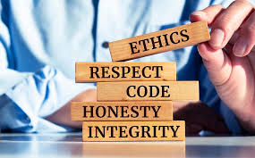

Máster en Ciberseguridad
Centro Prometeo by The Power. Formación orientada a seguridad informática, protección de sistemas y desarrollo de una mentalidad defensiva.

Estudiante de ASIR & Ciberseguridad · Trilingüe ES/PT/EN
Soy un apasionado de la tecnología con raíces en Brasil y base en Madrid. Actualmente estoy estudiando ASIR y Ciberseguridad en Centro Prometeo by The Power, con una orientación clara hacia la administración de sistemas, la gestión de redes y la protección de infraestructuras. Me interesa entender cómo funcionan los sistemas, cómo se protegen y cómo se recuperan cuando aparece un problema.
Creo firmemente en la ética hacker: el conocimiento debe ser libre, compartido y utilizado para construir sistemas más seguros. También intento aplicar una mentalidad analítica y práctica, como hice en el Reto de Ingeniería SENER, donde participé como consultor junior y conseguimos el 2º puesto defendiendo una propuesta técnica.
En 1º de ASIR también he participado en VECNA CORE, nuestro TFG/proyecto intermodular. Este trabajo me ha ayudado a conectar asignaturas como sistemas operativos, redes, hardware, nube, bases de datos y lenguaje de marcas dentro de una misma infraestructura empresarial.
Mi objetivo no es solo hacer que la tecnología funcione, sino conseguir que funcione de forma segura, estable y responsable.
Centro Prometeo by The Power. Formación orientada a seguridad informática, protección de sistemas y desarrollo de una mentalidad defensiva.
Centro Prometeo by The Power. Administración de sistemas, redes, servicios, virtualización e infraestructuras Linux/Windows.
Colegio San José del Parque. Etapa académica previa en la que reforcé organización, constancia y base general para continuar mi formación técnica.

Mis raíces en Brasil forman parte de mi identidad personal y cultural, aportándome adaptación, energía y apertura a diferentes entornos.

La seguridad informática debe practicarse con responsabilidad, respeto, honestidad e integridad profesional.
Mantengo una actitud de aprendizaje constante para mejorar mis competencias técnicas y adaptarme a nuevas herramientas.

El fútbol representa para mí disciplina, constancia y cooperación, valores que también aplico en proyectos técnicos.
Consolidar mis conocimientos en ASIR, Windows Server, Linux, redes TCP/IP, virtualización y buenas prácticas de seguridad.
Participar en proyectos reales de infraestructura, soporte, redes y seguridad, aportando documentación, análisis y disciplina técnica.
Especializarme en ciberseguridad defensiva y administración segura de infraestructuras para crecer profesionalmente en el sector IT.
Este portfolio representa mi punto de partida y mi compromiso con la mejora continua. La tecnología cambia constantemente, por eso considero que el aprendizaje, la práctica y la ética son tan importantes como las herramientas. Quiero crecer como profesional capaz de analizar problemas, proteger sistemas y aportar soluciones útiles, bien documentadas y sostenibles.
Mi mayor motivación es transformar la curiosidad en conocimiento práctico. Cada servidor configurado, cada script escrito y cada vulnerabilidad estudiada me acercan a mi objetivo: trabajar en tecnología con responsabilidad, creatividad y mentalidad de seguridad desde el primer día.